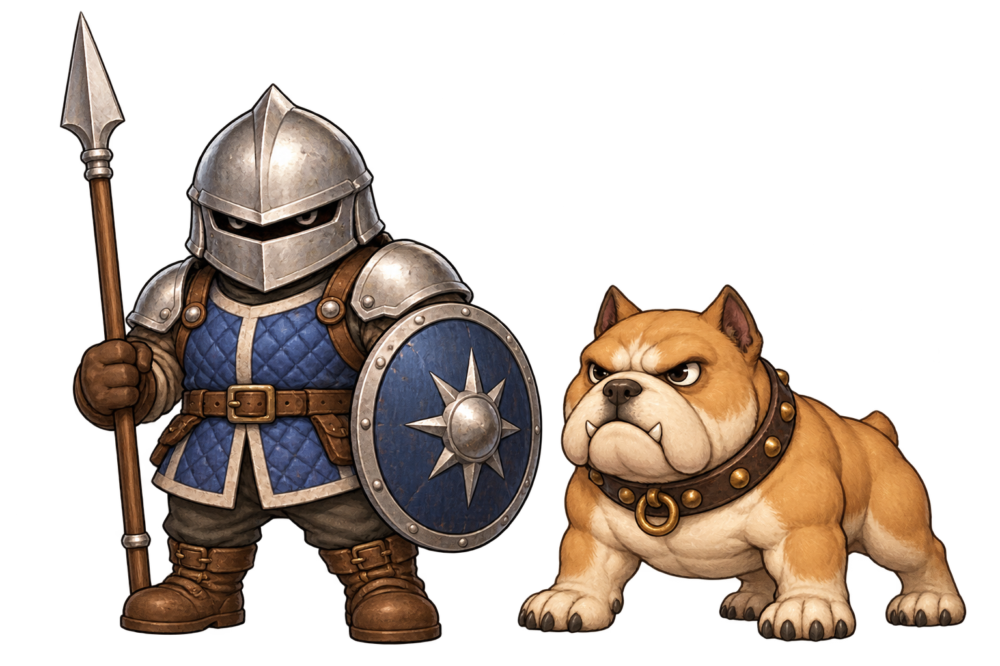

<!doctype html><html lang="ja"><meta charset="utf-8"><meta name="viewport" content="width=device-width,initial-scale=1"><title>番兵・番犬の初期デザイン</title><style>body{margin:0;background:#29242c;color:#edddc9;font:16px/1.8 sans-serif}main{max-width:1000px;margin:auto;padding:20px}h1{font-size:24px}img{width:100%;height:auto}a{color:#acdfec}</style><main><h1>店の番兵・番犬</h1><p>青い制服と銀の兜の番兵、厳つい短足の番犬。盗みで出現する強敵として制作する初期デザイン。</p><p>初期デザイン。方向別の動作とゲームへの出現は次工程。</p><a href="../fushigi-shops-v1/preview.html">店主3色の確認</a></main></html>
